Checkmate
Sept 2015 - Dec 2015
Project Summary
Checkmate is an automated self checkout system that helps customer solve their bagging issues in stores.
Team
- Elaine Tran
- Michelle Hoang
- Steven Derhammer
- Vishwas Shetty
Problem Statement
Few days after my arrival in United States of America, I had to go grocery shopping. I choose to go to Safeway beside my house. After I was done shopping, I walked to the billing and saw that there were two different modes of billing. One was the traditional cashier-staffed checkout and the other was a self checkout system. Back in India, there are very few or no self checkout kiosks. I was in a hurry, so I choose to use the traditional method instead. The next time I went grocery shopping, I deciced to give self checkout kiosk a try and had a horrific experience. The buzzer started beeping and everyone were looking at me suspiciously and I was standing numb struck. Much to my relief, a store employee came by and scanned all the items himself. I shared this experience with my fellow group mates(born and brought up in USA) and apparently all of them faced and are still facing issues with the kiosk. Our group decided to find a solution to help users have a great experience using self checkout kiosks at stores.
Research
We decided to employ mutiple research methods to identify what is the biggest issue with the self checkout kiosks at stores that a user faces. We were introduced to IDEO methods for research.
Fly in the wall (Look)
Surveys (Learn)
FLow Analysis (Learn)
Extreme Interviews (Ask)
After assimilaing the results from the research, we realised that bagging is one of the biggest issues faced by users. We created personas to identify primary, secondary and negative users for our solution.
Personas
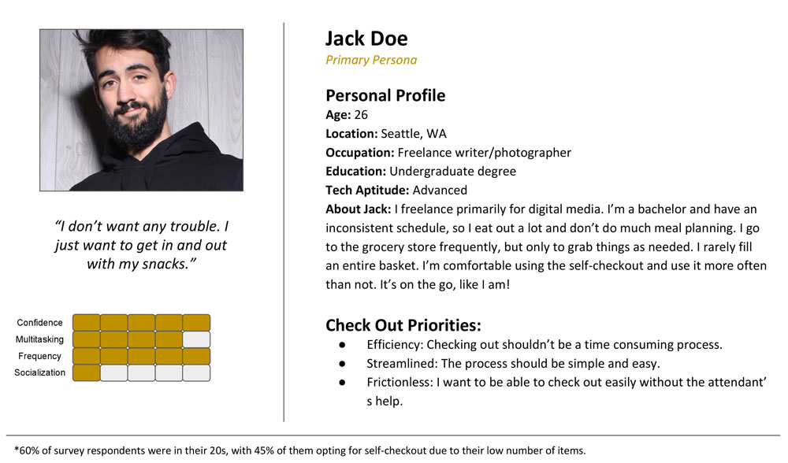
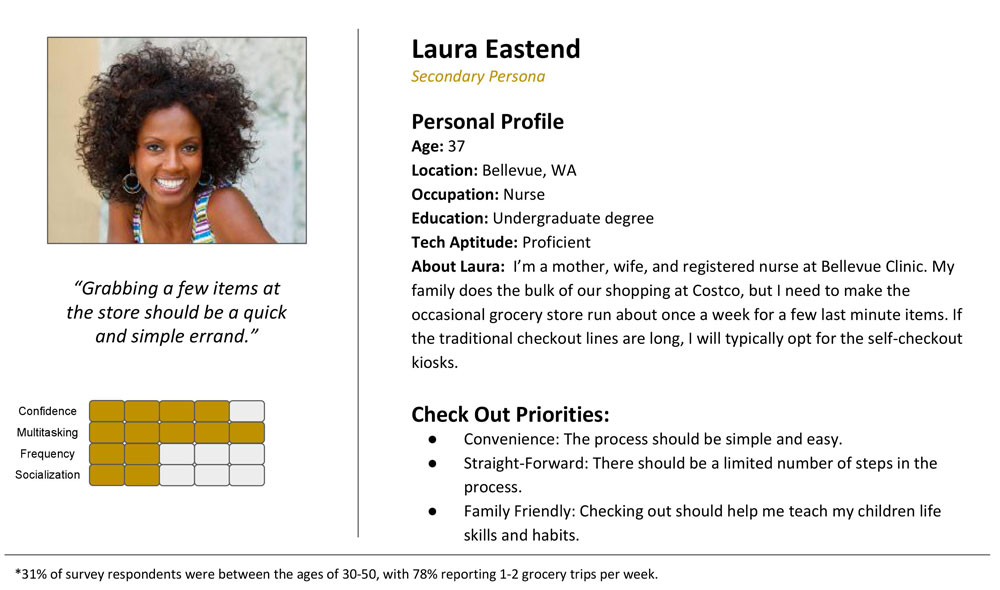
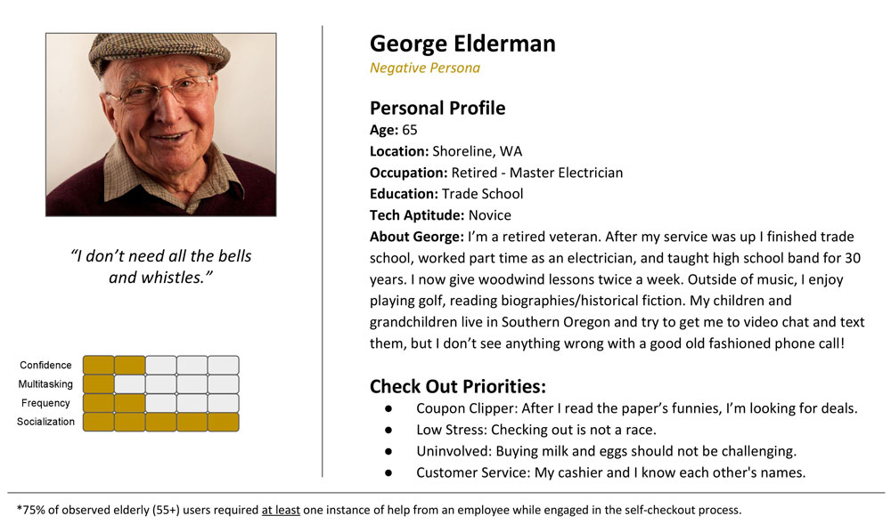
Ideation / Brain-storming
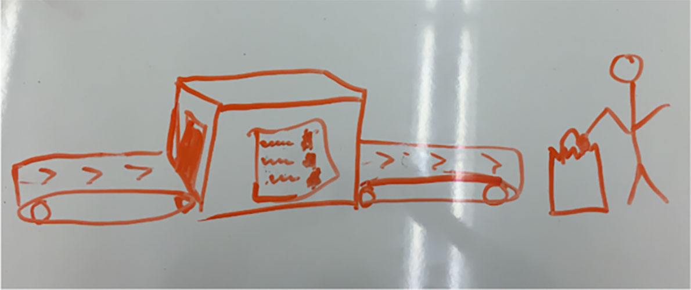
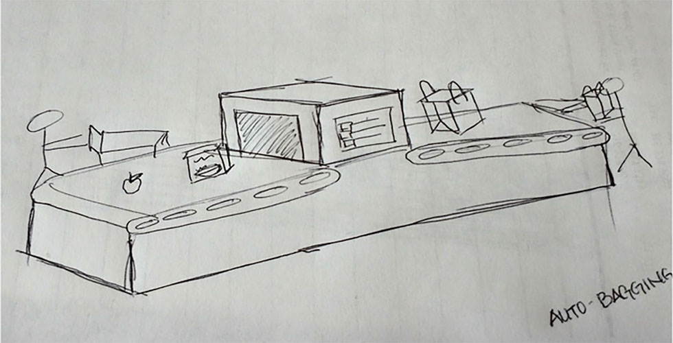
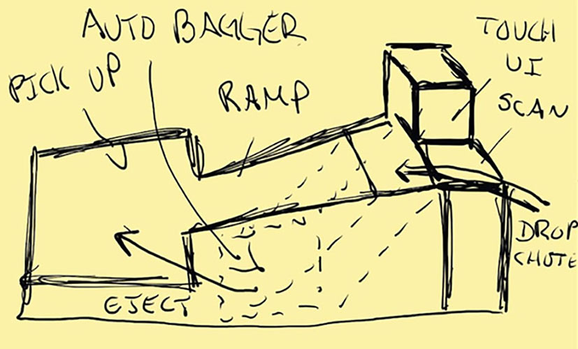
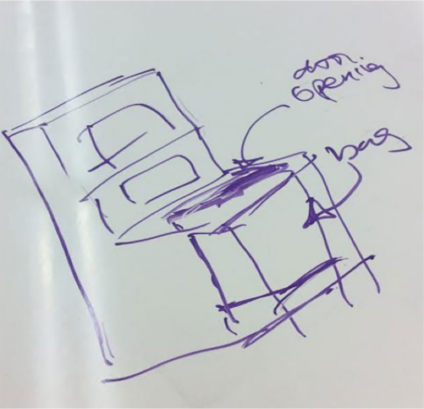
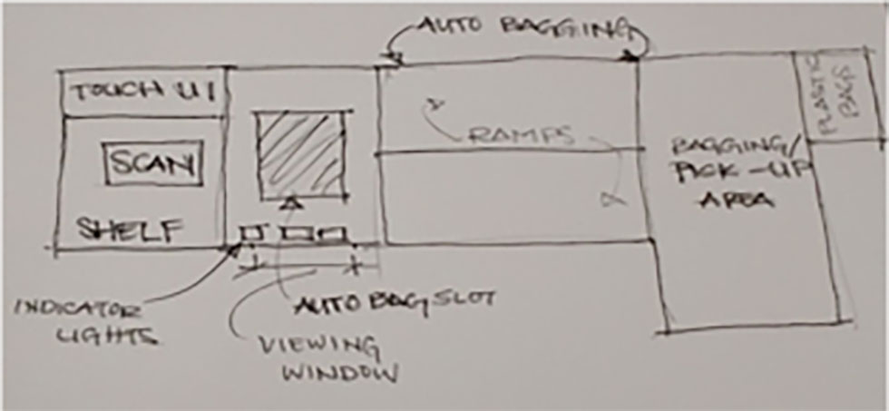
Prototyping / Usability Studies
Low Fidelity

Medium Fidelity
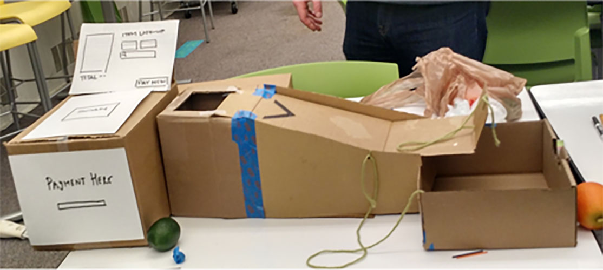
High Fidelity
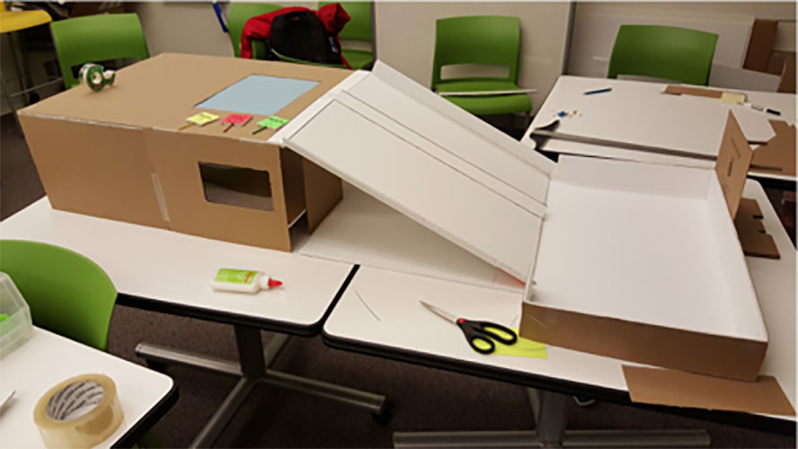
Medium Fidelity
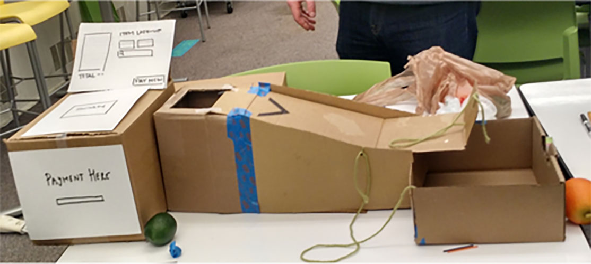
| Participant | Scenario | Gender | Auto-Bag | Self-Bag | Vice |
|---|---|---|---|---|---|
| P1 | Primary | F | Y | Y | Y |
| P2 | Primary | M | N | Y | Y |
| P3 | Secondary | M | Y | N | Y |
| P4 | Secondary | M | Y | N | Y |
| P5 | Primary | F | Y | Y | N |
High Fidelity
Based on the feedback recieved during the usability testing of the prototype, we decide to make the following changes
- Making the auto bagging feature clearer to the user
- Have an on-screen graphic that indicates how to utilize the auto bagging feature.
- Increased the overall size of the auto bagger item insertion port for increased visibility.
- Standardized lighting installed on frame to provide improved understanding of usage of auto bagging feature. Green, yellow, and red lights are paired with both textual and pictorial labeling.
- Removed the directional arrows originally placed on the self-bagging ramp.
- Installed a window in the side of the autobagger so users can visually observe the process and be assured that their purchases are being handled carefully.
- Changed the written label on the auto bagging slot from “auto bagger” to “place item here” or “drop item here”
- Physical changes to the auto-bagging design
- Increased volume of auto-bagger storage area.
- Installed shock dampening material under the auto-bagger storage area to reduce possible damage to products.
- Improved ramp design
- Split ramps to provide increased surface area and reliability for the autobagger.
- Increased the angle of declination on both ramps to reduce friction and expedite item transport.
- Reinforced the durability of the item safety guides installed on the edges of the ramps and around the bagging area.
- Increased distance between item scanner and bagging area, encouraging user to utilize item ramps.
- Changes to payment methods
- Payment page added to on-screen interaction point rather than unit frame.
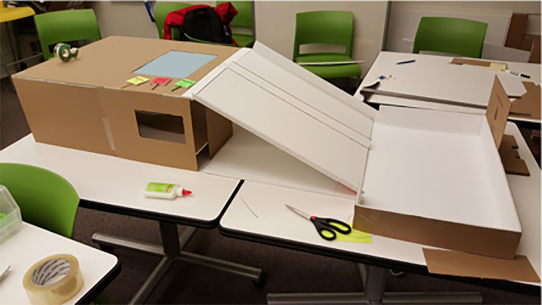
Reflection
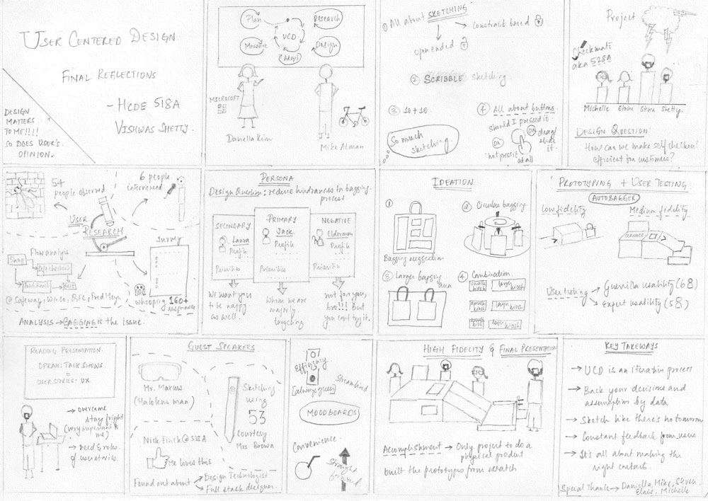